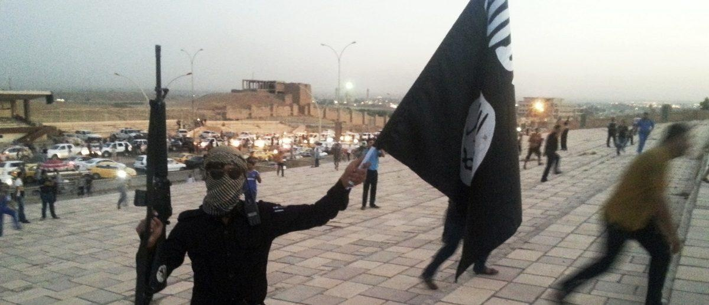

Feds Apprehended 151 Illegal Migrants On Terror Watchlist In Less Than A YearBorder Patrol arrested 151 illegal migrants whose names appeared on the national terrorism watchlist between October 2022 and August, according to federal data updated Friday. Border Patrol nabbed 98 individuals whose names appeared on the terror watchlist in all of fiscal year 2022, according to the data. Additionally, in fiscal year 2019, Border Patrol had zero apprehensions of individuals on the terror watchlist at the U.S.-Mexico border. (RELATED: EXCLUSIVE: Biden’s DHS Chief Totally Ignores Question About Record Number Of Migrants Being Let Into The US) Border Patrol encounters of illegal migrants between October 2022 and August surpassed 1.8 million, according to the updated data. In August alone, Border Patrol encountered roughly 181,000 migrants that crossed illegally. Meanwhile, federal authorities are trying to track down more than a dozen Uzbeki migrants smuggled through the U.S.-Mexico border by an ISIS-tied smuggler. “CBP remains vigilant in the face of ruthless smugglers and transnational criminal organizations who exploit vulnerable migrants, the same criminal organizations trafficking in lethal drugs that harm our communities,” Troy A. Miller, senior official performing the duties of the commissioner, said in a statement Friday. “Our operational tempo along the border has increased in response to increased encounters, and we remain squarely focused on our broader security mission and enforcing U.S. immigration laws. We are maximizing consequences against those without a legal basis to remain in the United States, including by processing more individuals into expedited removal than ever before. The men and women of CBP continue to work, day in and day out, to protect our nation, disrupting the entry of dangerous people and dangerous goods into the country while providing humanitarian care for vulnerable individuals,” Miller added. All content created by the Daily Caller News Foundation, an independent and nonpartisan newswire service, is available without charge to any legitimate news publisher that can provide a large audience. All republished articles must include our logo, our reporter’s byline and their DCNF affiliation. For any questions about our guidelines or partnering with us, please contact licensing@dailycallernewsfoundation.org. |
 |